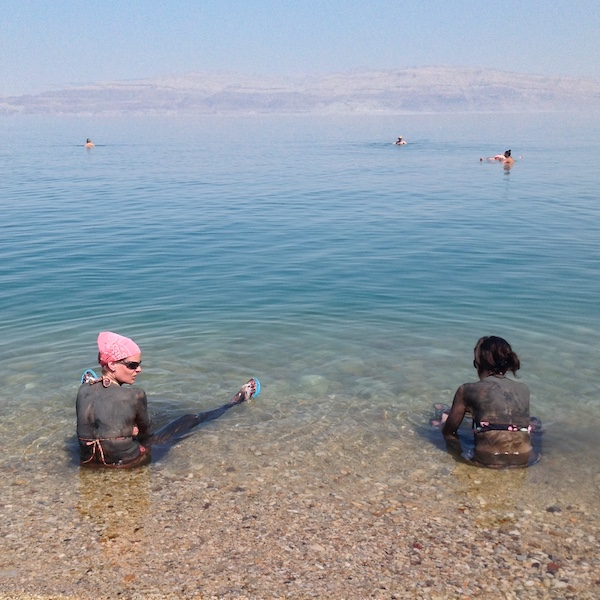
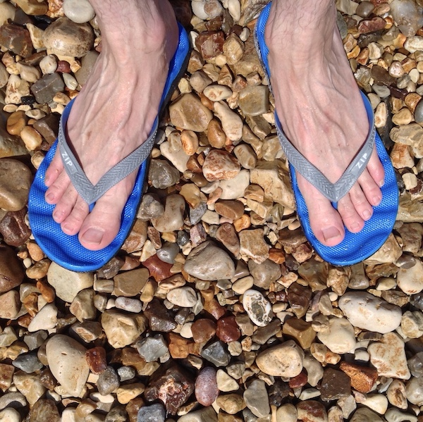
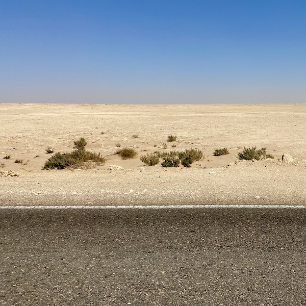
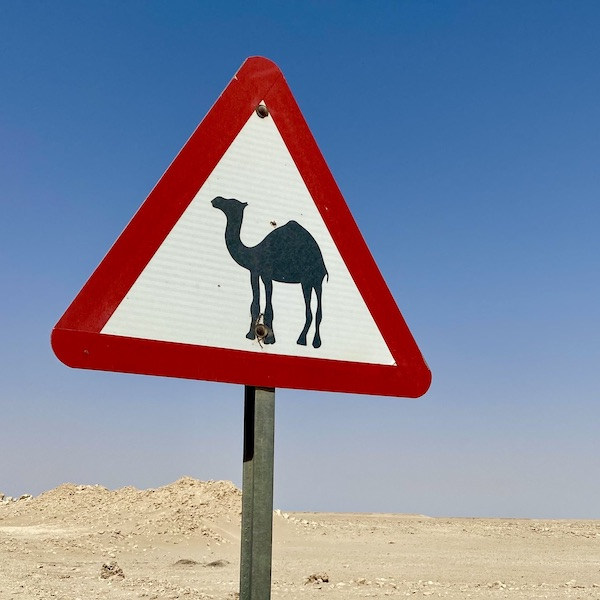
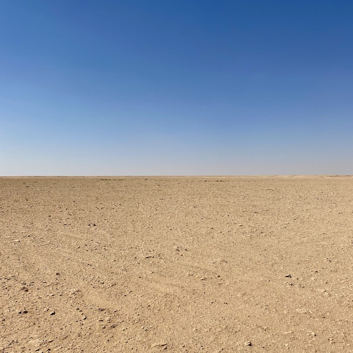
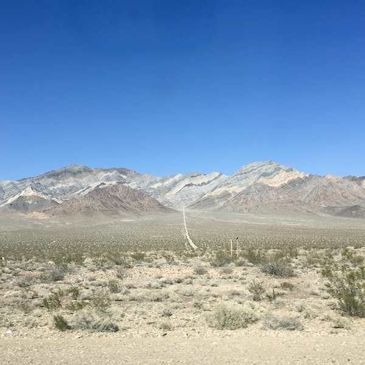
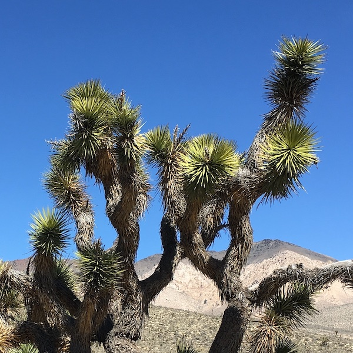
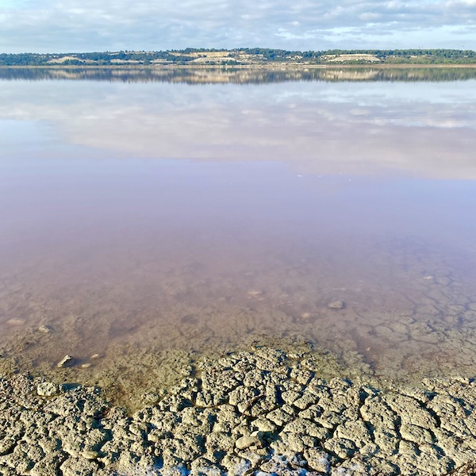
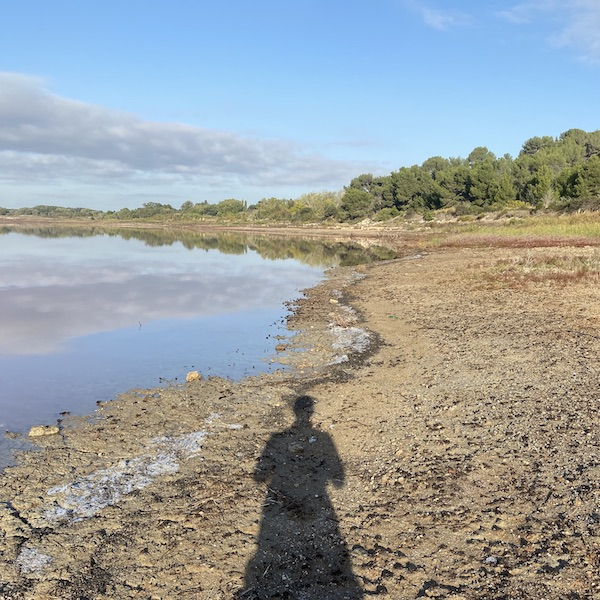

🤿 Lowest Points









–428 🇮🇱
Dead Sea
Earth
–320 🇵🇱
Kopalnia Guido
below ground
–133 🇪🇬
Qattara Depression
–085 🇺🇸
Death Valley
North America
–010 🇫🇷
Étang de Lavalduc
European Union
–007 🇳🇱
Zuidplaspolder
–004 🇧🇪
Veurne
–001 🇳🇬
Lagos Island
0000 🌊
Sea Level
0002 🇲🇩
Dniester
0023 🇲🇱
Senegal River
0033 🇻🇦
Saint Peter’s Square
0050 🇲🇰
Vardar
0055 🇸🇲
Ausa River
0073 🇺🇸
Harpers Ferry
West Virginia
0076 🇭🇺
Tisza
0115 🇨🇿
Elbe
0115 🇦🇹
Neusiedlersee
0133 🇱🇺
Moselle River
0193 🇨🇭
Lake Maggiore
0430 🇱🇮
Rhine
0840 🇦🇩
Gran Valira
–155 🇩🇯
Lake Assal
Africa
–154 🇨🇳
Ayding Lake
–132 🇰🇿
Karagiye Depression
–125 🇪🇹
Danakil Depression
–105 🇦🇷
Laguna del Carbón
–081 🇹🇲
Vpadina Akchanaya
–075 🇪🇷
Lake Kulul
–055 🇲🇦
Sebkha Tah
–055 🇪🇭
Sebjet Tah
–050 🇦🇶
Vestfold Hills
–047 🇱🇾
Sabkhat Ghuzayyil
–045 🇩🇴
Lake Enriquillo
–040 🇩🇿
Chott Melrhir
–034 🇵🇪
Bayóvar Depression
–028 🇦🇿 🇷🇺 🇮🇷
Caspian Sea
–017 🇹🇳
Shatt al Gharsah
–015 🇦🇺
Lake Eyre
–012 🇻🇪
Lagunillas
–012 🇺🇿
Sariqarnish Kuli
–010 🇲🇽
Laguna Salada
–007 🇩🇰
Lammefjord
–006 🇬🇷
Epitalio
–005 🇺🇦
Kuyalnik Estuary
–005 🇲🇷
Sebkha de Ndrhamcha
–005 🇱🇹
Nemunas Delta
–004 🇯🇵
Hachiro-gata
–004 🇬🇧
Holme Fen
–004 🇩🇪
Neuendorf-Sachsenbande
–003 🇮🇹
Jolanda di Savoia
–003 🇮🇪
North Slob
–002 🇸🇪
Kristianstad
–002 🇮🇳
Kuttanad
–002 🇵🇱
Marzęcino
–002 🇳🇿
Momona
0000 🌊
Sea Level
0021 🇸🇿
Maputo River
0028 🇷🇸
Timok River
0029 🇺🇸
Lake Champlain
Vermont
0037 🇲🇼
Shire River
0046 🇵🇾
Paraguay River
0059 🇳🇵
Mukhiyapatti Musharniya
0070 🇱🇦
Mekong
0090 🇧🇴
Paraguay River
0090 🇧🇾
Neman
0094 🇸🇰
Bodrog
0097 🇧🇹
Drangme Chhu
0160 🇹🇩
Djourab Depression
0162 🇿🇼
Runde River
0200 🇳🇪
Niger River
0200 🇧🇫
Black Volta
0258 🇦🇫
Amu Darya
0297 🇽🇰
White Drin
0300 🇹🇯
Syr Darya
0329 🇿🇲
Zambezi
0335 🇨🇫
Ubangi River
0350 🇸🇸
White Nile
0400 🇦🇲
Debed
0435 🇰🇬
Kara Darya
0513 🇧🇼
Limpopo River
0518 🇲🇳
Hoh Nuur
0621 🇺🇬
Albert Nile
0772 🇧🇮
Lake Tanganyika
0950 🇷🇼
Ruzizi River
1400 🇱🇸
Makhaleng River
{kind=link}
{kind=link}
{kind=link}
{kind=link}
{kind=link}
{kind=link}
{kind=link}
{kind=link}
{kind=link}